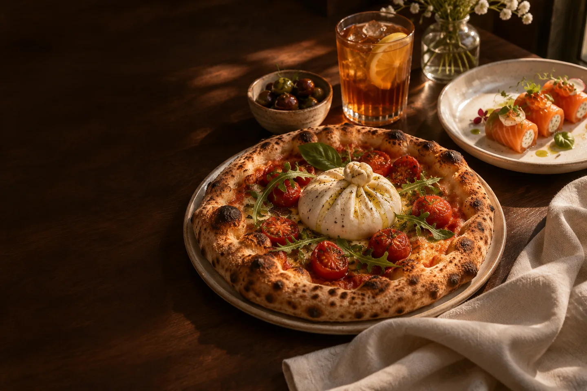
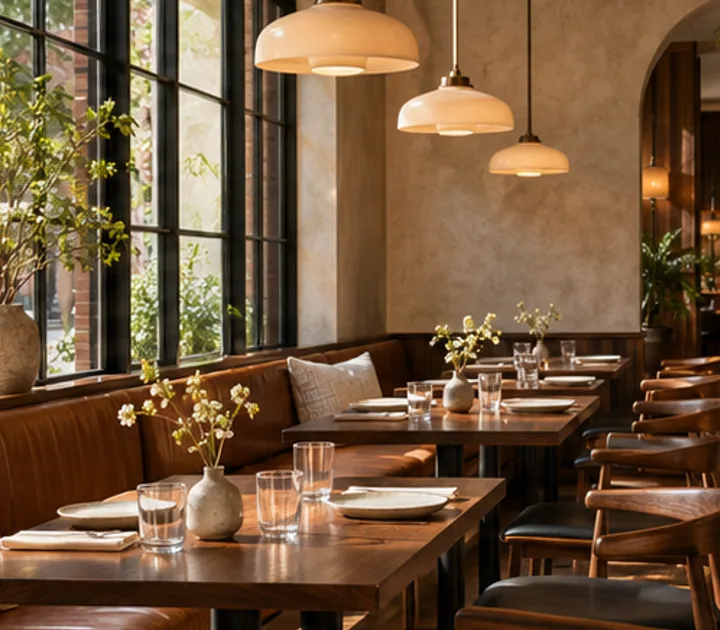
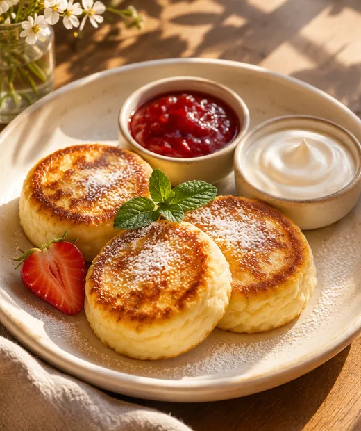
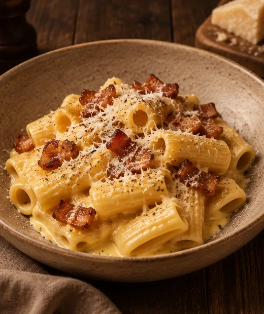
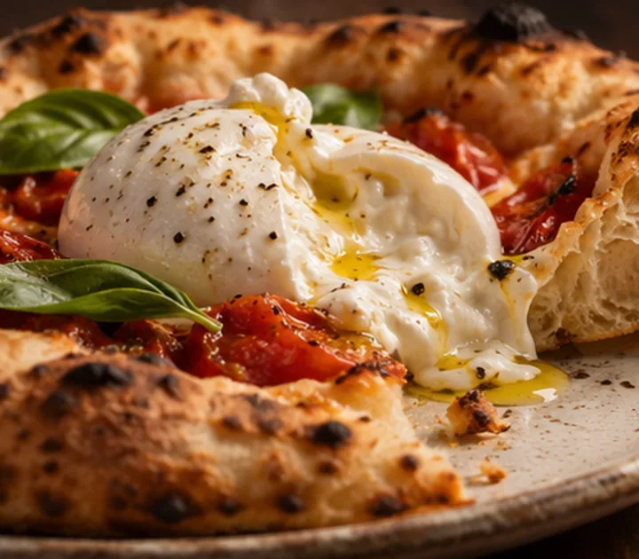
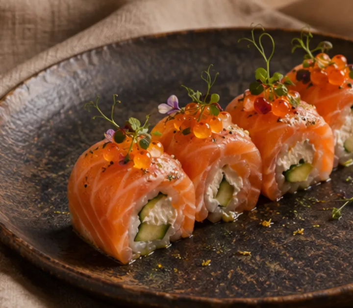

КАФЕ «ЕМА» · СИМФЕРОПОЛЬ
От завтрака
до ужина.
Сырники, пицца, роллы и чай на проспекте Александра Суворова.
Иллюстрация для демоверсии

О КАФЕ
Ема в ЖК
«Черника»
Кафе на проспекте Александра Суворова с завтраками, пиццей, роллами и пастой. В меню также есть десерты и фруктовые чаи.
- Кофе с собой
- Еда навынос
- Парковка
БЛЮДА И НАПИТКИ
Что попробовать

ЗАВТРАКИ
Сырники
С клубничным джемом и сметаной

ОСНОВНЫЕ БЛЮДА
Карбонара
ЧАЙ
Апельсин и облепиха
Подача блюд и напитков показана на иллюстрациях.
ГАЛЕРЕЯ
За столом
Визуальная концепция для демоверсии


КОНТАКТЫ
Загляните
в Ему
- Адрес
- Симферополь, проспект Александра Суворова, 15, корп. 7
- Часы работы
- Ежедневно 10:00–22:00
- Телефон кафе
- +7 978 528-70-15
Ема · ЖК «Черника»
Данные заведения сверены по странице кафе и справочнику.